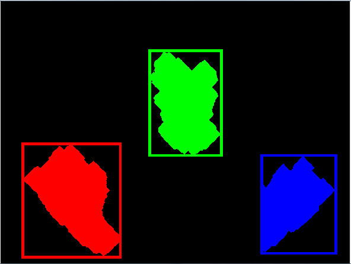
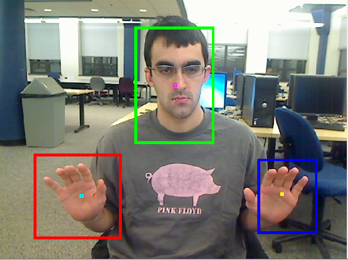
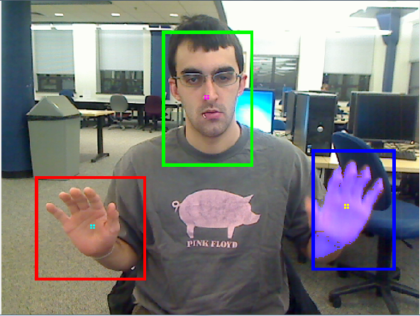
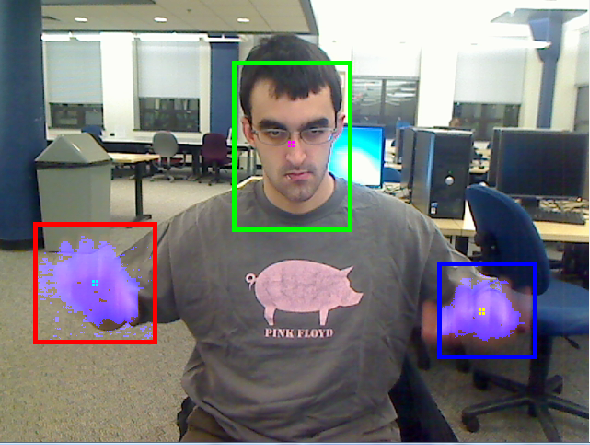
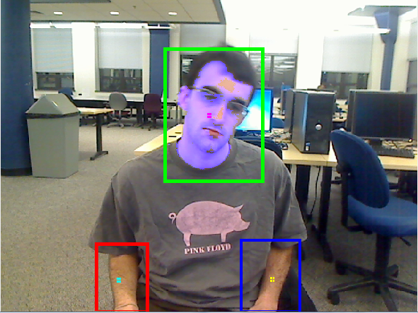

Tim Duffy
CS 440, Assignement P1
February 8, 2012
Using a live video input, detect a range of motions using various methods of shape recognition
This implementation relies on skin detection to find a person's hands and face. My program scans through each pixel and marks it as a skin pixel if it surpasses certain thresholds for hue, saturation, and intensity. The largest three blobs of skin pixels are used to detect gestures. The gestures that can be recognized are:
One or two hands waving - The motion of a shape is traced over three consecutive frames. If the centroid of th blob of skin pixels travels over a certain predefined distance, it is marked as a waving gesture. Furthermore, the average x values are tracked, and used to guess which hand is being waved (right or left hand). The system can distinguish if you are waving your left hand, right hand, or both hands.
Head shake - Using a similar method as above, motion is tracked for the shape. The detection of a head shake presumes that your hands are visible, and that your head is in the middle of your left and right hands. If the centroid of the shape moves enough, the gesture os marked as a "head shake"
Skin pixel detection works well. The left, right, and center objects are colored differently after image erosion and dilation.

The bounding boxes are seen on the output image as well.

When motion is detected, skin pixels within the bounding box are shown with a blue tint
:Here is an example of waving with one hand:

And two hands:
: 
.. and shaking you head:
